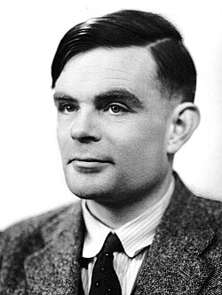

El Padre de la Informática Moderna

Alan Turing fue un matemático, lógico, científico de la computación, criptógrafo y filósofo británico, considerado uno de los padres de la ciencia de la computación y precursor de la inteligencia artificial.
Su trabajo en Bletchley Park durante la Segunda Guerra Mundial fue fundamental para descifrar los códigos de la máquina Enigma alemana, lo que salvó millones de vidas y acortó la guerra significativamente.
Saber más en WikipediaGrandes Aportaciones e Ideas
- Máquina de Turing: Modelo matemático abstracto que definió el concepto moderno de algoritmo y computadora.
- Descifrado de Enigma: Diseñó la máquina "Bombe", capaz de romper las criptografías militares nazis.
- Test de Turing: Criterio propuesto en 1950 para evaluar si una máquina puede exhibir comportamiento inteligente.
Hitos Históricos
| Año | Evento | Impacto Histórico |
|---|---|---|
| 1936 | Publicación de la Máquina Universal | Sentó las bases teóricas de la informática moderna. |
| 1939 | Llegada a Bletchley Park | Lideró la sección dedicada a romper el código naval Enigma. |
| 1950 | Publicación del Test de Turing | Inició el debate pionero sobre la Inteligencia Artificial. |